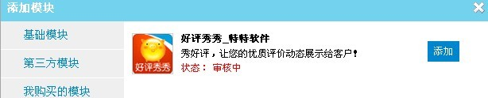
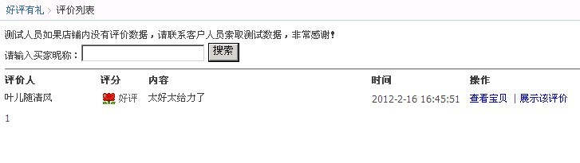
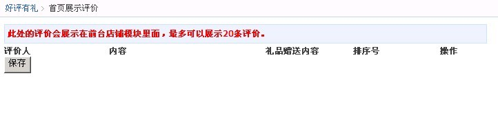

亲，由于淘宝已禁止外链和同步展示进宝贝详情页面，所以目前只能在首页展示（支持所有尺寸），我们会尽量去想其他方法去展示进宝贝页。
系统默认获取订购好评有礼软件后产生的好评，如果刚订购的用户建议等评价充足时再添加展示！
系统默认获取订购好评有礼软件后产生的好评，如果刚订购的用户建议等评价充足时再添加展示！
好评秀秀添加流程：
订购好评秀秀--进店铺首页装修--添加自定义模块--选择"我购买的模块"添加好评秀秀--店铺发布；
进入好评有礼后台--好评列表--选择较好的评价展示--店铺刷新--完工。
参考店铺效果：
http://miomoon.tmall.com/shop/view_shop.htm 190尺寸效果
http://viiyii.taobao.com/p/haoping.htm 950尺寸效果
第一步：
第二步：

第三步：
第四步：

第五步：
